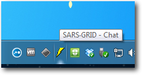
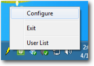
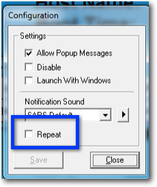

Rio Hondo College
Information Technology Services


Disable SARS-GRID Repeat Notifications
One of the components of SARS-GRID is a chat notification system that alerts counselors with a pop-up message when someone has checked in for an appointment. This message is set to repeat by default. You can disable the repeating notifications by following these steps.
Right-click on the Chat icon.
It is a yellow thunderbolt icon in the Windows task bar.

Select Configure

Un-check the Repeat box

You can additionally configure Chat to Launch with Windows from this screen. This is useful if you do not keep the SARS-GRID launcher open while you are working.